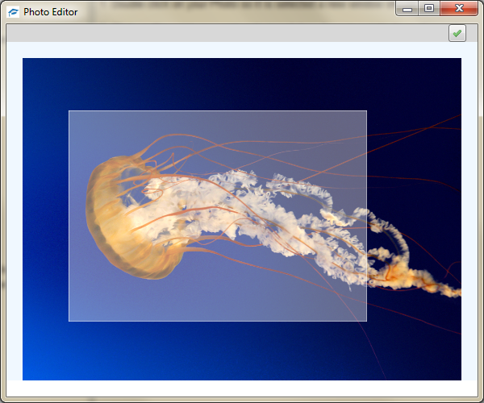
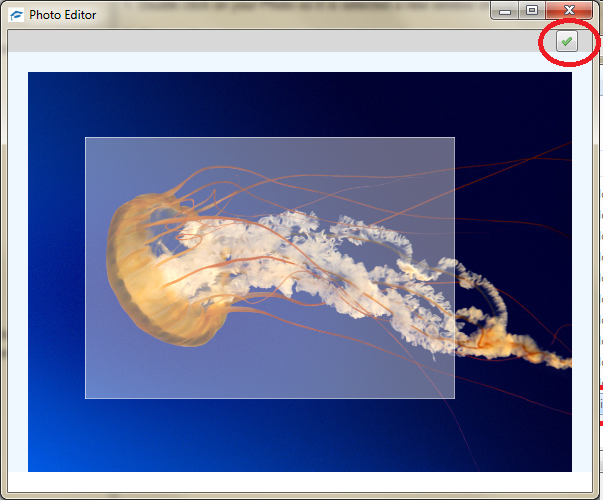

How to crop your photo
1. Double click on your Photo so it is selected a new window should appear
2. Click on the point you want select and drag down in a right down diagonal
a white box should appear anything inside this will be kept

3. Click on the green arrow if your happy with the selection otherwise repeat step 2, if you want to cancel just shut the window

4. if your happy close the window and the image will change for the update image
Created with the Personal Edition of HelpNDoc: Easy CHM and documentation editor